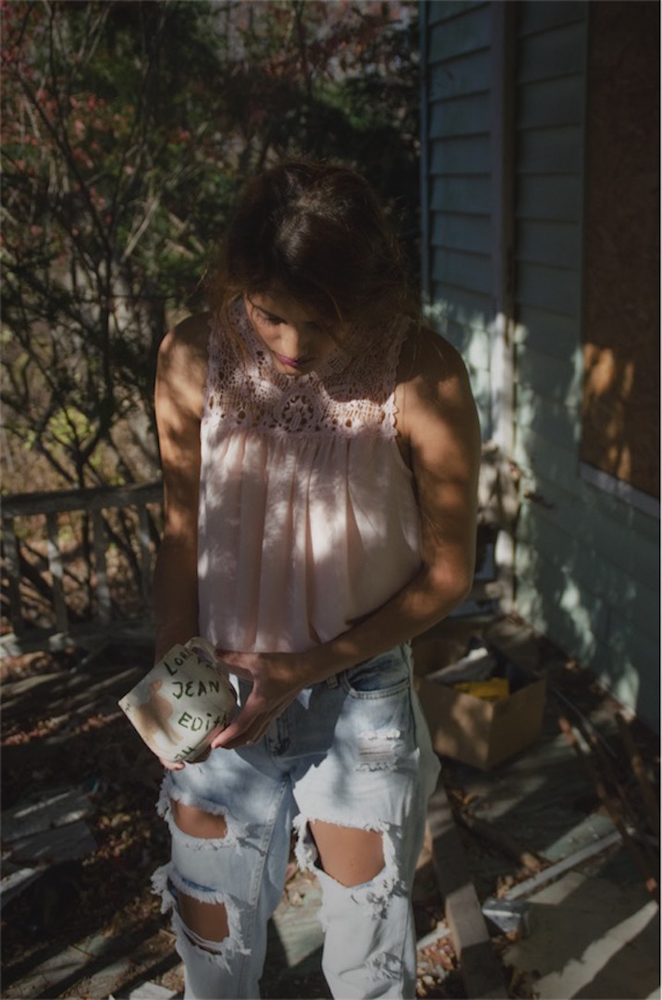
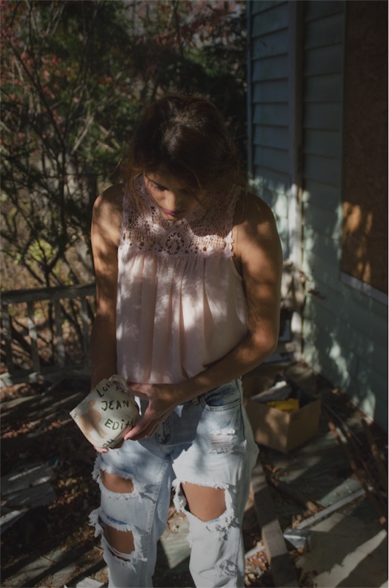
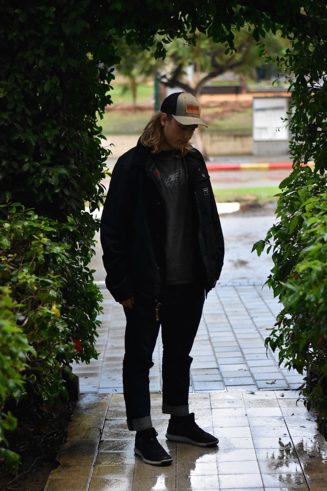
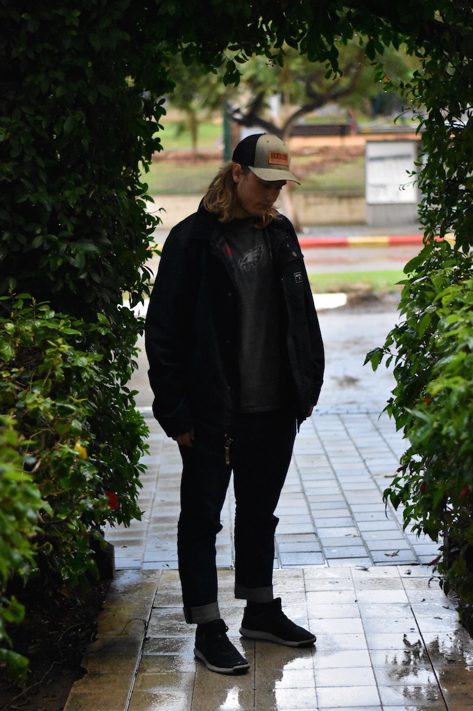

Photography Gallery
Using natural light and urban enviroments, Ethan takes lifestyle, fashion, family, and graduation portraits. Ethan has a keen eye for turning ordinary enviroments into new perspectives and strong detail. Traveling in the Pennsylvanna and New York area, Ethan works with families, artists, models, and companies like American Eagle to create beautiful portraits. Ethan offers a range of services and packages. Checkout his work below.


 



 
